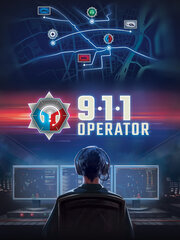

911 Operator
Details
|  | |
| Playtime | 40m 0s |
| Last Activity | 9/2/2024 10:44:40 |
| Added | 9/2/2024 19:36:05 |
| Modified | 9/2/2024 19:36:25 |
| Completion Status | Played |
| Library | Steam |
| Source | Steam |
| Platform | PC (Windows) |
| Release Date | 2/24/2017 |
| Community Score | 70 |
| Critic Score | 76 |
| User Score | |
| Genre | Indie Simulator Strategy |
| Developer | Jutsu Games |
| Publisher | Code Horizon PlayWay SONKA |
| Feature | Single Player |
| Links | Facebook Steam Official iPhone Android iPad Twitch Wikipedia Epic |
| Tag | |
Description
OFFICIAL SEQUEL TO 911 OPERATOR
https://store.steampowered.com/app/793460/112_Operator/
In 911 OPERATOR, you take on the role of an emergency dispatcher, who has to rapidly deal with the incoming reports. Your task is not just to pick up the calls, but also to react appropriately to the situation – sometimes giving first aid instructions is enough, at other times a police, fire department or paramedics’ intervention is a necessity. Keep in mind, that the person on the other side of the line might turn out to be a dying daughter’s father, an unpredictable terrorist, or just a prankster. Can you handle all of this?
Check out thousands of cities from all around the world. The Free Play mode lets you choose a city to play on - the game will download its map, along with real streets, addresses and the emergency infrastructure. You can also try the Career mode, which contains 6 cities with unique events – survive an earthquake in San Francisco and save Washington, D.C. from bomb attacks.
A number of police, fire department and paramedic units are at your disposal. The forces may use a variety of vehicles (from common ambulances to police helicopters), essential equipment (e.g., bulletproof vests, first aid kits and technical tools) and consist of team members with different abilities.

Main features:
***
The game requires Internet connection to download free maps. The offline game is available after downloading the maps.
All map data © OpenStreetMap authors
* The term “city” is used within the meaning of OpenStreetMap service and relates to urban areas described as “city” or “town” therein.
https://store.steampowered.com/app/793460/112_Operator/
In 911 OPERATOR, you take on the role of an emergency dispatcher, who has to rapidly deal with the incoming reports. Your task is not just to pick up the calls, but also to react appropriately to the situation – sometimes giving first aid instructions is enough, at other times a police, fire department or paramedics’ intervention is a necessity. Keep in mind, that the person on the other side of the line might turn out to be a dying daughter’s father, an unpredictable terrorist, or just a prankster. Can you handle all of this?
PLAY ON ANY CITY IN THE WORLD*
Check out thousands of cities from all around the world. The Free Play mode lets you choose a city to play on - the game will download its map, along with real streets, addresses and the emergency infrastructure. You can also try the Career mode, which contains 6 cities with unique events – survive an earthquake in San Francisco and save Washington, D.C. from bomb attacks.
MANAGE TEAMS
A number of police, fire department and paramedic units are at your disposal. The forces may use a variety of vehicles (from common ambulances to police helicopters), essential equipment (e.g., bulletproof vests, first aid kits and technical tools) and consist of team members with different abilities.
PEOPLE’S LIVES ARE IN YOUR HANDS!
Main features:
- Over 50 recorded dialogues inspired by real calls: serious and dramatic, but sometimes also funny or annoying.
- Real First Aid instructions.
- Opportunity to play on any city in the world!
- 6 selected cities in Career mode, featuring unique calls and events.
- More than 140 types of reports to encounter.
- 12 types of emergency vehicles (including helicopters, police cars and motorcycles).
***
The game requires Internet connection to download free maps. The offline game is available after downloading the maps.
All map data © OpenStreetMap authors
* The term “city” is used within the meaning of OpenStreetMap service and relates to urban areas described as “city” or “town” therein.